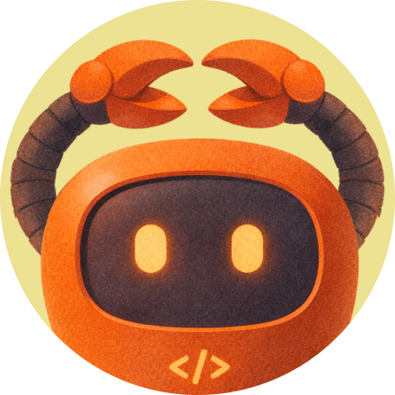

MicroClaw
An AI sidekick that makes autonomous work visible and controllable. This case study follows the product from FOMO-driven installs to trusted, repeat use through first wins, visible boundaries, and ambient habit loops.
What MicroClaw is
MicroClaw is an agentic AI assistant aimed at first-time users in China. The hard part isn't what the agent can do — it's getting a novice to trust it enough to install it, succeed once, and come back.
For a first-time user, the question is not only “what can it do?” It is “can I understand it, try it safely, and trust it with something real?” The project therefore focused on the adoption journey around the agent, not on adding more capability to the agent itself.
Where adoption breaks
FOMO gets novices to the door, but it does not give them a reason to understand, trust, or return to an agent. They fall off at four predictable points — each one a place where the product asked for trust it had not yet earned.
- Permissions and setup demanded before any value lands.
- Novices bounce before they ever reach a first win.
- No mental model for what the thing actually does.
- Empty-box paralysis at the very first screen.
- Hidden steps feel out of control and untrustworthy.
- Trust needs visible boundaries and legible state.
- Nothing ambient pulls the user back the next day.
- Repeat use needs a low-friction re-entry point.
Trust is earned, one belief at a time
I reframed adoption as a sequence of belief shifts. At each stage, the product has to give a novice a concrete reason to move forward — then make that reason visible in the experience.
Interactive · hover a node to trace, click to pin
Design for progress before asking for trust
The belief map became four connected strategies: reduce the commitment required to start, make the first outcome tangible, make agency understandable and controllable, then make return effortless.
Trust lives in sequence, motion, and timing — when value arrives, when a permission is requested, and how the product explains its own behavior. I made those moments runnable rather than leaving them as static screens.
One-step install and deferred decisions replace an early configuration wall with a lightweight first action.
Scenario scaffolds turn an abstract agent category into a concrete task that can deliver value before the user is asked for more access.
Familiar system metaphors and visible states make hidden agent work understandable instead of technical or opaque.
Progressive controls, clear recovery paths, and ambient entry points make a first win safer to repeat — and easier to return to when a real need appears.
Five moments that earn trust
These are live prototype states, not static mockups. Together they turn the strategy into a progression: get in, find a relevant task, understand the agent, see a first result, and return with confidence. Each scene pairs a novice concern with the design response that earns the next step.
FOMO creates the pressure to install; it does not create trust. A first-timer arrives because everyone must have it, not because they understand the product. So the first step is one tap, decisions deferred: get in first, then introduce permissions and setup in context.
FOMO gets it onto the phone; it never says what it's for. Facing a blank prompt, a new user has no idea where to start. So instead of an empty box, they're routed into a concrete, everyday scenario — the app answers “what's in this for me” before it asks them to.
An agent acts on its own, and its work is invisible. Before a newcomer can trust the output, they need to grasp what the agent is doing. Familiar metaphors and visible states make hidden work readable instead of opaque.
A newcomer doesn't yet know what's safe to authorize, so the order is inverted: the app does the easy, valuable work first — a scenario built for a guaranteed first win, with familiar, app-like metaphors keeping it legible — and only then asks for a permission, with the benefit spelled out. Trust is earned by a result, not requested on faith.
One irreversible mistake ends the relationship; a single win fades if nothing pulls the user back. The time console gives people a way to pause work, change approach, confirm high-risk actions, and recover. Combined with lightweight, ambient entry points, those controls turn one first win into a trusted habit.
Give an abstract agent a recognizable presence
The identity system moves from a distinct mascot, to expressive cover states, into the product itself. A token pause is only one test: the same character should make every agent state easier to recognize and understand.
The mascot gives an abstract agent a recognizable presence before it asks for trust.

The same cover language shows the character doing different kinds of work.
When work pauses, MicroClaw appears in the task itself with a clear explanation and a direct path to its status.
From FOMO to a model for agentic trust
A working, animated model for onboarding novices to agentic AI — not a shipped product or a claim of usage impact, but a concrete experience that can be judged and tested.
Adoption reframed as a sequence of belief gates, each earned by a specific design response — a lens that outlives this one product.
A progressive permission × autonomy ladder plus recoverable limits — a concrete pattern for giving first-time users real control over an autonomous agent.
The honest open questions: does scenario-to-first-win actually convert, and do ambient loops drive real return? The next step is testing with real first-time users.